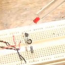
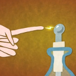

Why do we use references? |
Why do we use references? |
Extraordinary Materials |
Paper List |
Tools for Academia |
How to find new Papers |
Citizen Science Projects |
Reference Management with JabRef |
|  |
Nobel Prize in Physics 2009 |
|  |
Short Educational Clips |